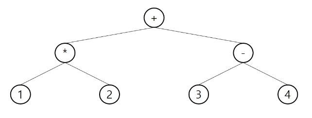

Data structure
1.스택
스택의 특성
- 물건을 쌓아올린듯 자료를 쌓아올린 형태의 자료구조이다.
- 스택에 저장된 자료는 선형 구조를 갖는다.
- 후입선출구조 LIFO(후입선출)
- 마지막에 삽입한 자료를 가장 먼저 꺼내는 방식
연산은 어떻게 할까요?
API name = Java.util.Stack
- 삽입
stack.push(item) - 삭제
stack.pop() - 공백확인
stack.isEmpty() - 최상위원소 확인
stack.peek()
peek()과 pop()의 차이는 실제로 스택에서 직접 꺼내느냐? 아니면 스택의 가장 위쪽 부분(top)에 해당하는 원소를 꺼내지 않고 들여다 보느냐의 차이이다.
어떤곳에 사용해야할까요?
가장 대표적인 알고리즘 문제로는 괄호 검사이다.
[{((,()))}] 이런 String 이 들어왔을때 괄호가 잘 닫혔있는지,or 닫히지 않은 괄호가 있는지 확인할때 stack을 이용하면 될것입니다.
스택은 Function call 에 사용되어 집니다
프로그램에서의 함수 호출과 복귀에 따른 수행 순서를 관리하기위해 Stack을 이용합니다. ex) JVM Stacks
스택 사용해보기
1. 인터넷 브라우저 시뮬레이터 만들어보기
- 스택을 활용하여 뒤로가기 버튼,앞으로 가기 버튼이 있는 인터넷 브라우저를 만들어 봅시다.
앞으로 가는 history와 뒤로가는 history를 위해 두개의 스택 구현이 필요함.
2. 큐
큐의 특성
큐는 선입선출 구조로 구성되어있다. 즉 대기열과 같이 먼저 기다린 사람이 먼저 나가는 구조로 구성된다.
연산은 어떻게 할까요?
큐는 필요한 연산을 선언해둔 컬렉션 클래스를 이용할 수 도 있고,큐 인터페이스에 넣어서 사용할 수 있습니다.
Java api =java.util.Queue()
- 생성
- Queue::offer(item) 큐의 뒤쪽에 원소삽입
- 원소 빼내기(Front에서 원소를 빼내기)
- Queue::poll()
- 큐 생성하기
- Queue::createQueue()
- 큐 크기 확인
- Queue::size()
- 큐 원소 존재 여부 확인
- Queue::isEmpty()
큐를 선언해봅시다.
//첫번쨰 방식
LinkedList<String> queue2= new LinkedList<String>;
System.out.println(queue.size()+"//"+queue.isEmpty());
queue.offer("1");
System.out.println(queue.size()+"//"+queue.isEmpty());
//두번째 방식
Queue<Integer> queue2=new LinkedList<>();
System.out.println(queue.size()+"//"+queue.isEmpty());
queue.offer(1);
System.out.println(queue.size()+"//"+queue.isEmpty());
첫번째 방식과 두번째 방식은 뭐가 다를까요?
첫번째 방식과 다르게 두번째 방식은 제너릭타입으로 선언된 Queue 인터페이스에 LinkedList 를 넣어 이용합니다.
객체지향언어의 장점인 다형성과 관련된 얘기인데, LinkedList에 Queue에 필요한 메서드들이 구현되어있긴 하지만! 인스턴스의 의도가 큐를 사용하기위함 이기 때문에. 의도에 맞게끔 사용할 수 있게끔 제너릭타입 인터페이스를 이용하여 용도를 제한한다고 생각하면 쉽겠습니다.
즉, Linkedlist에는 큐에서 사용되는 offer,poll 메서드도 있지만 이외에도 offerlast,offerfirst와 같은 다양한 메서드들이 있고, 이는 dequeue 라는 자료구조에서 이용되어집니다.
우리는 Queue를 쓰는데 이런 메서드들에 대한 요구가 없습니다. 그렇기 때문에 이를 이용할 수 없게 제한 해야한다는 것입니다.
한줄요약 : Queue 를 만들었으면 Queue에 맞게끔 쓰기위해 Queue 인터페이스를 이용해야 올바른 코딩 방법이다.
package com.ssafy.live03;
import java.util.LinkedList;
import java.util.Queue;
public class myChu {
public static void main(String[] args) {
// 마이쮸 나눠주기 시뮬레이션
// 1번이 한개의 마이쮸를 받는다
// 1번이 다시 줄을 선다
// 2번이 줄을 선다
// 1번이 두개의 마이쮸를 받는다
// 1번이 다시 줄을 선다
// 3번이 들어와 줄을 선다
// 2번이 한개의 마이쮸를 받는다
// 2번이 다시 줄을 선다
// 4번이 들어와 줄을 선다
// 1번이 세개의 마이쮸를받는다
// 1번이 다시줄을 선다
// 5번이 줄을 선다
// 3번이 한개의 마이쮸를 받는다
// .
// .
// .
// 마이쮸가 20개있을때 마지막것을 누가 가져갈까?
int item=20;
int person=1;
Queue<int[]> queue=new LinkedList<int[]>();
queue.offer(new int[] {person,1});
while(item > 0) {
System.out.println(queue.toString());
if(!queue.isEmpty()){
int[] p=queue.poll();
int avaliableCnt= (item >= p[1] )?p[1]:item;
item -=avaliableCnt;
if(item==0) {
System.out.println("마지막 마이쭈 당첨자 : "+p[0]+"가져간개수: "+avaliableCnt);
break;
}else {
++p[1];
queue.offer(p);
queue.offer(new int[] {++person,1});
}
}
}
}
}
3.우선순위 큐 (Priority Queue)
- 우선순위와 함께 원소들을 저장하는 큐
- FIFO 순서가 아니라 우선순위가 높은 순서대로 먼저 나가게 된다.
- Heap(Tree) 자료구조를 이용해 만들어짐
- 최대힙을 사용하냐,최소힙을 사용하냐에 따라 출력을 먼저 할 우선순위가 큰지 작은지 결정 해줄 수 있다.
4. 배열과 리스트
순차리스트 (배열)
-
실제 메모리공간에 물리적으로 순차적으로 저장된 자료구조를 말한다.
-
단순 배열을 이용해 순차리스트를 구현하는경우 삽입/삭제 과정에서 연산속적 메모리배열을 위한 원소이동 작업에 대한 오버헤드가 발생한다.
-
삽입 /삭제에 일어나는 연산이 빈번하게 일어난다.
연결리스트
-
자료의 논리적 순서와 물리적 순서가 일치하지않고, 개별적으로 위치하는 원소의 레페런스를 연결한 구조를 이루는 자료구조
-
링크를 통해 원소에 접근하기때문에, 물리적인 순서를 맞추기위한 작업이 필요하지 않고, 레퍼런스만 잘 조정해주면 된다.
-
이를 이용하면 자료구조의 크기를 동적으로 조정할 수있어 메모리의 효율적 사용이 가능하다.
연결리스트의 기본구조
연결리스트의 구성요소는 크게 노드/헤드 2가지가 있다.
노드 1) 데이터필드
- 원소의 값을 저장하는 자료구조
- 저장할 원소의 종류나 크기에 따라 구조를 정의하여 사용함 2) 링크 필드(다음 노드와의 연결)
- 다음 노드의 주소를 저장하는 자료구조
헤드
- 리스트의 첫 노드를 가리키는 레퍼런스.
자세한 연결 구조는 링크필드에 의해 다음 노드와 연결되는 구조이며, 헤드가 가장 앞의 노드. 링크필드가 연속된 다음 노드들을 가르키는 형태로 아래와 같다.
시각화

연결리스트 만들어보기
// 노드 구현 클래스
public class Node {
public int data;
public Node link;
public Node(int data, Node node) {
this.data = data;
this.link = node;
}
public Node(int data) {
this.data = data;
}
}
// LinkedList 구현
public class simpleLinkedList {
public Node head;
public void addFirstNode(int data) {
Node newNode=new Node(data,head);
head=newNode;
}
@Override
public String toString() {
return "simpleLinkedList [head=" + head + "]";
}
public void printList() {
for(Node currNode=head;currNode!=null;currNode=currNode.link) {
System.out.print(currNode.data+" ");
}
System.out.println();
}
}
// 테스트케이스
public class simpleLinkedListTest {
public static void main(String[] args) {
simpleLinkedList list = new simpleLinkedList();
list.addFirstNode(1);
list.addFirstNode(2);
list.addFirstNode(3);
list.printList();
}
}
출력결과 : 3 2 1
위의 테스트케이스는 간단한 연결리스트 삽입 연산을 구현한 것입니다.
구현 결과를 살펴보면 어떤 자료구조와 같다고 생각이 듭니다 바로. 스택 이 생각나네요. push() 연산과 동일하게 보여집니다. 그렇다면 이 LinkedList를 이용해서 노드의 가장 마지막값. 즉 tail 값만 빼올수 있다면 pop() 연산도 구현을 할 수 있습니다.
이번 예제는 Siglic LinkedList를 간단히 구현해보았지만 실제 LinkedList Class 는 doublic LinkedList로 구현이 되어있습니다.
5. 트리

출처 https://wwst.tistory.com/2 님의 글에서 옮겨왔습니다.
위와 같은 형태의 자료구조를 트리라고 합니다.
여러가지 트리가있지만 가장 중요한건 이진 트리이니 그것을 다시한번 정리해보려합니다.
이진트리의 종류

출처 : https://jiwondh.github.io/2017/10/15/tree/
위와같은 형태로, 루트노드에 2개이하의 자식을 가지고있는 트리를 이진트리라고 합니다. 트리의 종류는 포화이진트리 등 다양한 형태가 있겠습니다.
트리는 어디에 자주 이용할까요?
트리를 이용하는데는 대표적으로 BFS,DFS가 있겠습니다.
bfs - 너비우선탐색
dfs - 깊이우선탐색
루트노드에서 자식노드까지 쭉 내려가서 깊이’우선’으로 탐색하는것이 dfs이고, bfs는 너비우선탐색, 즉 노드 및 형제노드를 모두 탐색하고, 다음 자식노드순으로 쭉 탐색해나가는 탐생 방식입니다.
bfs는 Queue로 구현을 할 수 있고
dfs는 Stack이나 재귀함수로 구현이 가능합니다.
순회
순회란 트리의 노드들을 체계적으로 방문하는 것을 뜻합니다.
전위순회 - 부모노드 방문 후 , 자식노들을 좌/우 순서로 방문
중위순회 - 왼쪽 자식노드 부모노드 오른쪽 자식노드 순으로 방문
후위순회 - 자식노드를 좌 우 순서로 방문하고 부모노드를 마지막으로 방문
특별한 이진트리
수식 이진트리

수식을 표현하는 이진 트리
수식 이진 트리라고 부르기도 합니다.
연산자는 루트 노드이거나 가지노드일 수 밖에 없습니다. 즉 ,연산자는 리프노드가 될 수 없습니다.
반대로 피연산자는 모두 리프노드가 되어야 합니다.
이진탐색트리(Binary Search Tree)
탐색작업을 효율적으로 하기위한 자료구조로 모든원소는 서로다른 “유일한” 값을 가집니다.
왼쪽 서브트리 < 루트 노드 < 오른쪽 서브트리 순으로 정렬되어 저장되어야 하며 여기서 나눠진 왼쪽 서브트리,오른쪽 서브트리 또한 이진 탐색 트리입니다.
이것을 중위 순회하면 오름차순으로 정렬된 값을 얻을 수 있습니다.
6. 그래프
인접 행렬
정점의 개수를 V개라고 했을때 V*V 의 행렬을 이용해 그래프 정점간의 인접관계를 표현한 행렬.